VIAJERO LANZAROTE: hallazgos (25-nov)
Cómo se hizo. Viaje a Lanzarote en coche de alquiler, creado con window.__rutaLanzarote (la API ya tenía Lanzarote visible; no se reinició nada). Ese ayudante fija 6 días (dom 8 a vie 13 nov: llegada, 4 de ruta, vuelta; vuelos 09:30 y 18:05), no 3. Los días 1 a 6 se recorrieron a las 07:30, 10:00, 13:00, 16:00, 19:00 y 22:00 con el reloj falso (grupo lanza_dN_HHMM.jpg). La cola de Chrome no me dejó pasar en 40 minutos (la batería la tuvo ocupada), así que el resto (marcar, saltar, Cambiar plan, DÍAS, RESERVAS, EXPLORAR, RUTA, Perfil) se hizo con el navegador del panel en 390x844. El texto de los volcados de la tabla de horas salió sin las eses por un fallo de mi script (no es de la app); lo que se apunta se comprobó en las capturas. No se probó el sonido (Chrome sin audio): queda como duda general. Scripts: scripts/destino/viajero_lanza_1.mjs y viajero_lanza_2.mjs (este último no llegó a correr).
Resumen: 5 contradicciones (1 duda), 10 cosas sin lógica (3 dudas), 3 pantallas tardías o raras, 2 cosas que tapan, 3 textos (1 duda). Total 23.
Contradicciones entre pantallas
contradicciónC1. RESERVAS: «Alojamiento» marcado ✓ arriba y «Falta» en su tarjeta
- Pantalla:
- RESERVAS (y DÍAS dice «Añade tu alojamiento»; HOY dice «Pon tu alojamiento para volver con un toque»)
- Hora simulada:
- mar 10 nov, 11:00
- Repetir:
- crear el viaje con
__rutaLanzarote({zona:'costa_teguise'}), ir a RESERVAS. La zona sola cuenta como alojamiento hecho en el contador («2 de 6 listo») pero no en la tarjeta.
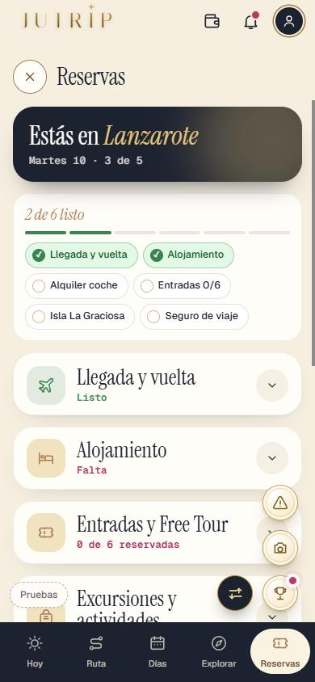
contradicciónC2. RESERVAS dice «Martes 10 · 3 de 5» y el viaje tiene 6 días
- Pantalla:
- RESERVAS (cabecera). RUTA dice «6 días · 5 noches»; DÍAS tiene 6 días.
- Hora:
- mar 10, 11:00
- Repetir:
- abrir RESERVAS con el día de HOY en el martes.
contradicciónC3. El día de La Graciosa: DÍAS «Excursión» y HOY «Hoy libre / A tu aire»
- Pantalla:
- HOY del miércoles 11 (índice 3) vs DÍAS «MIÉ 11 La Graciosa (excursión) · Día de excursión · Sin reservar». HOY enseña una lista de sitios sueltos (Arrecife, LagOmar, Teguise…) que no son del día; a todas horas igual, incluso a las 22:00. Fotos de la lista: cuadros grises sin foto.
- Hora:
- mié 11, cualquier hora
- Repetir:
- ir(día 3) en HOY.
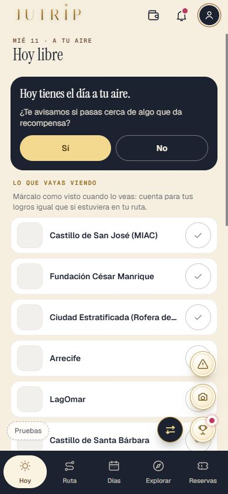
contradicciónC4. Mismo trayecto, 13 min y 29 min
- Pantalla:
- HOY, Mirador de los Helechos. Sin ubicación: «13 min en coche · desde el alojamiento» (19:00). Con la ubicación puesta en Costa Teguise (el alojamiento): «29 min · desde ti» (18:30). Además DÍAS dice 13 min desde la Casa-Museo.
- Hora:
- mar 10, 18:30 con ubicación; 19:00 sin ella
- Repetir:
- mutar
__pos a Costa Teguise (28.9996,-13.4850) y comparar. Mis coordenadas son aproximadas: puede ser duda.
dudaC5. DÍAS marca «Hecho · Ver tu día» los días 8 y 9 sin haber hecho nada
- Pantalla:
- DÍAS, con HOY simulado en el martes 10
- Hora:
- mar 10, 11:00
- Repetir:
- abrir DÍAS. Quizá «Hecho» signifique «pasado»; entonces el texto engaña si el viajero no marcó nada.
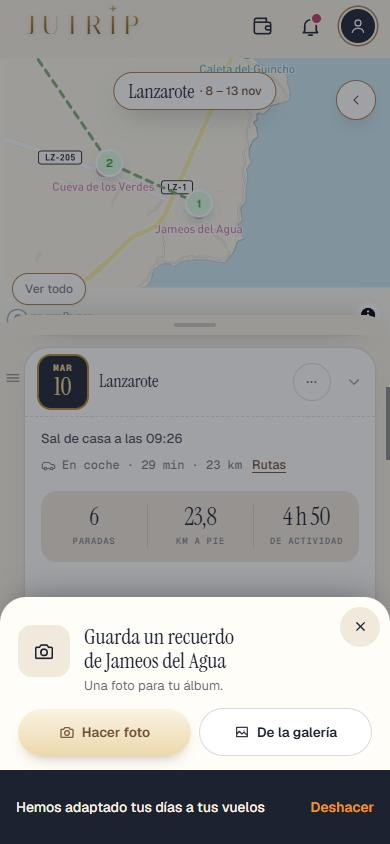
Cosas sin lógica
sin lógicaL1. «Aterrizas a las 9:30» cuando ya son las 10:00 (y también «Empiezas hacia las 10:15»)
- Pantalla:
- HOY, día de llegada (dom 8). Sigue igual «Aterrizas» durante todo el día; debería pasar a «Has aterrizado».
- Hora:
- dom 8, 10:00
- Repetir:
- ir(día 0, 10:00)
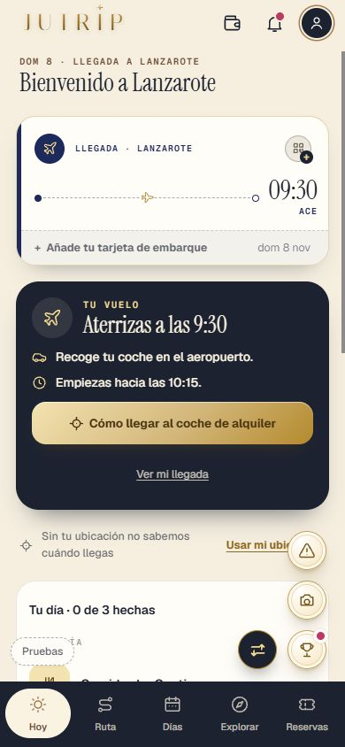
sin lógicaL2. Día de llegada: 4 horas vacías y primera parada a las 14:18
- Pantalla:
- plan del día 1 (HOY y DÍAS): aterriza 09:30, sale hacia las 10:15, comida 13:03, y la primera parada (Teguise) a las 14:18. Entre las 10:15 y las 13:00 no hay nada.
- Hora:
- dom 8
- Repetir:
- crear el viaje con vuelos 09:30 / 18:05.
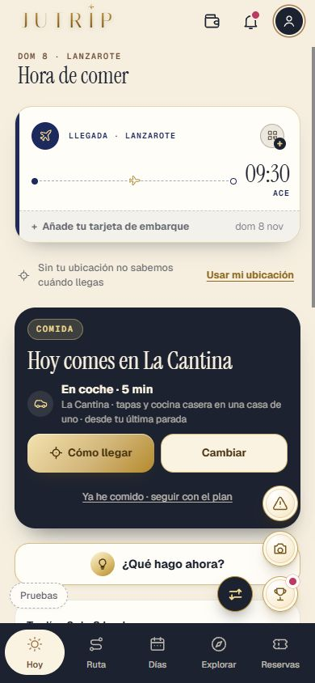
sin lógicaL3. «Teguise ya ha cerrado» y «Han cerrado … Haría»: los pueblos no cierran
- Pantalla:
- aviso de arriba en HOY («Han cerrado Teguise y Fundación César Manrique · los tienes en Lugares pendientes»; «Han cerrado Mirador del Río, Haría y Casa-Museo…»). Los pueblos llevan horario inventado (Haría 10:00–17:30 en DÍAS).
- Hora:
- dom 8 a las 16:00 y 19:00; mar 10 a las 18:30
- Repetir:
- ir(día 0, 16:00) / ir(día 2, 18:30)
sin lógicaL4. Sitio cerrado como PRIMERA PARADA
- Pantalla:
- HOY. La Geria: «Cerrado · Abre mañana a las 10:00» como «Parada 1 de 5» a las 22:00; Playas de Papagayo «Cerrado · Abre mañana» a las 19:00; el día 1 a las 22:00 sigue «PRIMERA PARADA Arrecife» (hora que ya pasó). Debería decir que se acabó el día.
- Hora:
- lun 9 22:00; jue 12 19:00; dom 8 22:00
- Repetir:
- ir(día, hora) sin marcar nada.
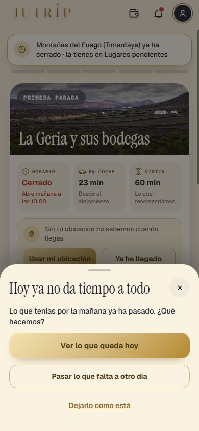
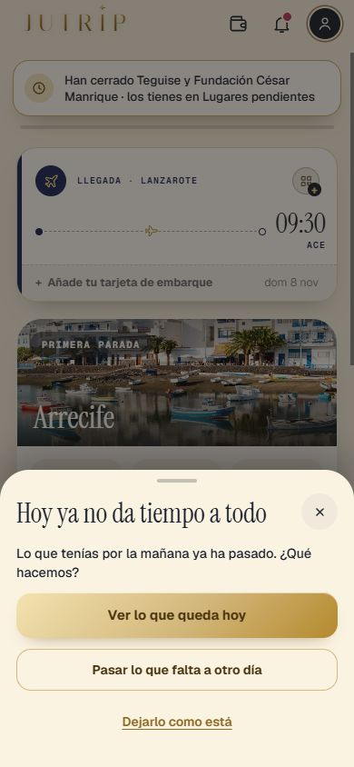
sin lógicaL5. «Hoy ya no da tiempo a todo · Lo que tenías por la mañana ya ha pasado» a las 22:00, a las 13:00 con Timanfaya aún abierto, y a la vez que otro aviso
- Pantalla:
- hoja de abajo en HOY. A las 22:00 no queda nada que reorganizar; a las 13:00 de lunes la primera parada «Abierto · cierra a las 15:45». El martes a las 16:00 sale con el aviso «A este ritmo llegarías a la Cueva de los Verdes cuando ya ha cerrado» y «1 aviso más» a la vez. Tras saltar una parada, la hoja sigue saliendo a las 13:50 y 15:30.
- Hora:
- dom 8 22:00; lun 9 13:00; mar 10 16:00
- Repetir:
- ir(día, hora) con ruta sin marcar.
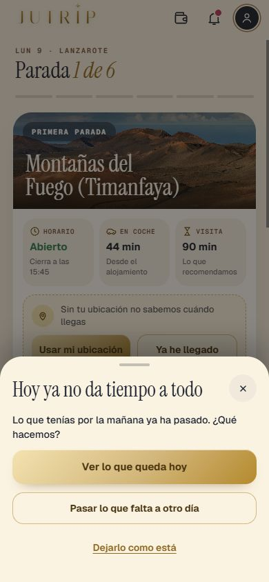
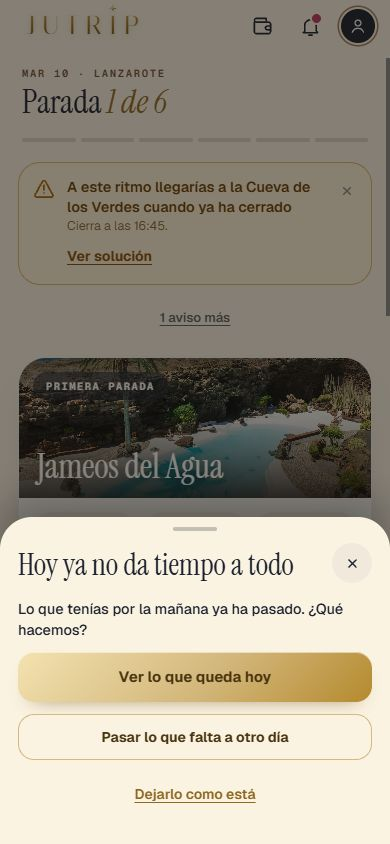
sin lógicaL6. Un mirador sin horario como primera parada a las 19:00 (de noche)
- Pantalla:
- HOY: Mirador de los Helechos «Abierto · Sin horario» de siguiente parada pasada la puesta de sol (≈18:15 en noviembre). No hay parada de atardecer en ningún día del viaje.
- Hora:
- mar 10, 19:00
- Repetir:
- ir(día 2, 19:00)
sin lógicaL7. Día de vuelta: «Tu vuelo sale a las 18:05» a las 19:00 y a las 22:00
- Pantalla:
- HOY del vie 13: con el avión ya salido siguen «Tu vuelo sale a las 18:05», «Devuelve el coche en la T1 (llega antes de las 15:35)», «Cómo llegar al aeropuerto» y «Has hecho 0 paradas hoy». Con el vuelo a las 18:05 y LagOmar de 105 min desde las 10:00, el «día libre hasta las 13:45» a las 12:40 ya no cuadra (LagOmar aún sin hacer).
- Hora:
- vie 13, 19:00 / 22:00 (y 12:40)
- Repetir:
- ir(día 5, 19:00)
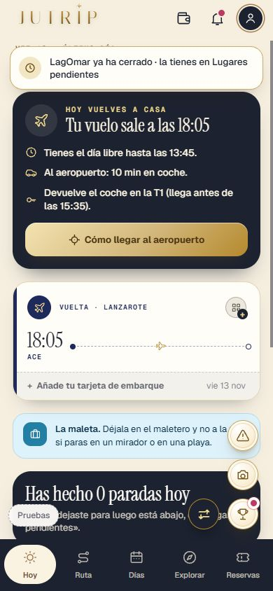
sin lógicaL8. DÍAS: «23,8 KM A PIE» en un día en coche
- Pantalla:
- cabecera del día en DÍAS: «6 PARADAS · 23,8 KM A PIE · 4 h 50 DE ACTIVIDAD»; los 23,8 km son de coche (tramos «En coche · 29 min · 23 km»).
- Hora:
- mar 10, 11:00
- Repetir:
- abrir DÍAS en el martes.
dudaL9. Minutos de visita raros
- Pantalla:
- plan: «El Golfo y el Charco de los Clicos» 139 min; «Salinas de Janubio» 20 min y «Playa de Montaña Bermeja» 15 min; «Playas de Papagayo» 240 min; «Cueva de los Verdes 9:30–16:45» pero «Jameos 10:00–18:00». Con 139 min el día 2 acaba más tarde de lo que cierra El Golfo.
- Hora:
- lun 9 y jue 12
- Repetir:
- HOY, lista «Tu día», o DÍAS.
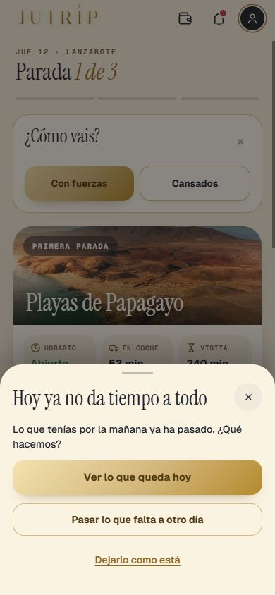
dudaL10. «Hora de comer» sin restaurantes (jue 12 y vie 13)
- Pantalla:
- en el plan las comidas del jueves («Marina Rubicón o Playa Blanca») y del viernes («Arrecife») tienen la lista de restaurantes vacía. No llegué a abrir la tarjeta de comida de esos días (la vi solo en los datos). El lunes sí tiene restaurantes.
- Hora:
- jue 12 14:40; vie 13 12:30
- Repetir:
- ir(día 4, 14:40) y abrir «Hora de comer».
Pantallas tardías, vacías o raras
pantallaP1. La hoja «Guarda un recuerdo de Jameos del Agua» sale tarde, tapa la siguiente parada y no se va
- Pantalla:
- HOY tras [He terminado] en Jameos: sale unos segundos después, tapando el Mirador del Río y el aviso; sigue abierta horas simuladas después (18:30) y también se queda encima de DÍAS al cambiar de pestaña y de viaje nuevo, hasta pulsar la X.
- Hora:
- mar 10, 10:05 en adelante
- Repetir:
- ir(día 2, 10:05, ubicación Jameos) → [Ya he llegado] → [He terminado] → [Cambiar plan] → «Saltarme esta parada».
pantallaP2. RUTA: la fila de botones se corta por la derecha y se marcan Ruta y Explorar a la vez
- Pantalla:
- pestaña RUTA: los iconos de la derecha (bombilla y flecha) salen cortados; abajo el relieve de «Explorar» sigue marcado a la vez que «Ruta» en naranja (puede ser el cambio de pestaña en curso: lo vi una vez). Arriba «Lanzarote» sale dos veces.
- Hora:
- mar 10, 11:00
- Repetir:
- pasar de EXPLORAR a RUTA.
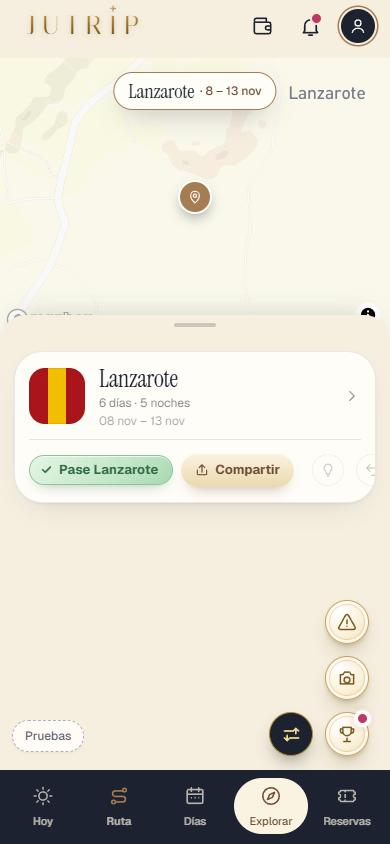
pantallaP3. Perfil: la tarjeta del viaje sale primero sin foto (degradado azul) y la foto aparece después
- Pantalla:
- Perfil › Mis viajes, tarjeta «Lanzarote»; el crédito de la foto en letra mono pequeña se monta sobre el degradado. «6 días · 18 paradas».
- Hora:
- cualquiera
- Repetir:
- abrir el Perfil con el viaje recién creado.
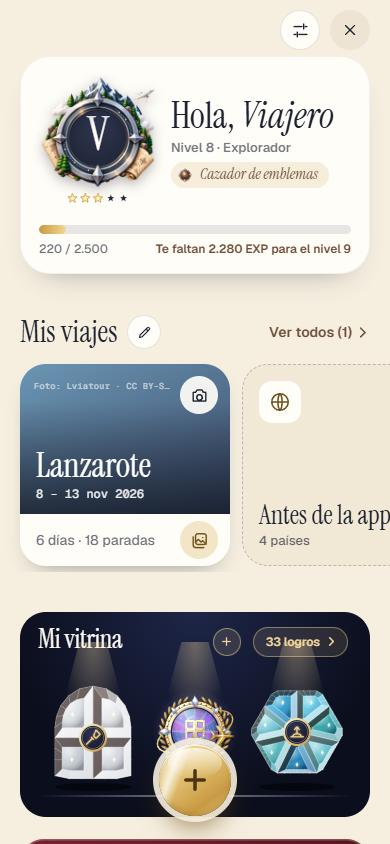
Algo que tapa un botón o texto
tapaT1. La columna de botones flotantes tapa «Cambiar plan», el horario y los iconos de entrada
- Pantalla:
- HOY: el botón [Cambiar plan] queda cortado («Cambiar pl»), el título «Fundación César Manrique» y el texto del HORARIO pasan por debajo de la columna; en DÍAS el icono rojo de entrada de cada tarjeta queda medio tapado por Cámara/Logros; «La maleta» en el día de vuelta.
- Hora:
- lun 9 10:00; dom 8 16:00; mar 10 11:00
- Repetir:
- mirar la tarjeta de la parada a 390 px de ancho sin hacer scroll.
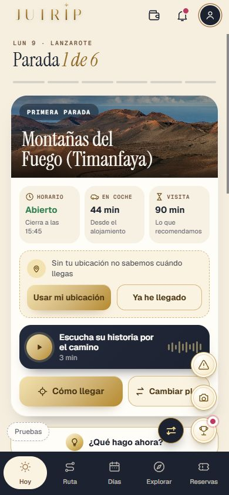
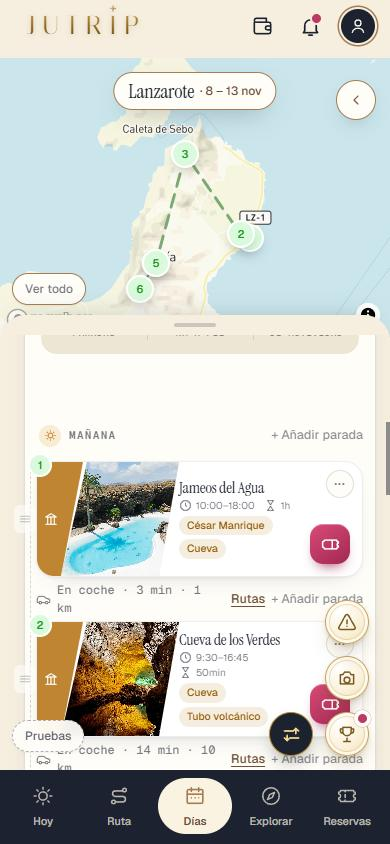
tapaT2. DÍAS: «En coche · 3 min · 1 km» parte la línea y el «+ Añadir parada» se pisa con el trayecto
- Pantalla:
- DÍAS, entre las tarjetas de Jameos y Cueva: «En coche · 3 min · 1 / km» en dos líneas junto a «Rutas» y «+ Añadir parada».
- Hora:
- mar 10, 11:00
- Repetir:
- abrir DÍAS y bajar.
Textos
textoX1. «Jameos del Agua marcada como visto»: género mezclado
- Pantalla:
- aviso de abajo al pulsar [He terminado]. Es «marcado como visto» (los Jameos) o «marcada como vista».
- Hora:
- mar 10, 10:05
- Repetir:
- [Ya he llegado] y [He terminado].
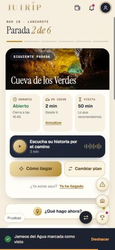
textoX2. «¿Cómo vais?» y «Márcalo como visto cuando lo veas» (cuenta para tus logros)
- Pantalla:
- «¿Cómo vais?» (Con fuerzas / Cansados) se dirige a varios aunque no se sabe cuántos viajan; en el código de las avisos de horario aparecen también «si os retrasáis, os avisamos» y «lo tenéis previsto» (no los vi en pantalla). Regla del proyecto: sin «vosotros».
- Hora:
- 16:00 de cualquier día
- Repetir:
- ir(día, 16:00).
dudaX3. Rótulo «Pase Lanzarote» en RUTA y «Pon tu alojamiento…» en HOY con la zona ya elegida
- Pantalla:
- HOY «Pon tu alojamiento para volver con un toque [Añadir]» aunque la zona (Costa Teguise) ya está puesta y la ruta habla de «cerca de tu alojamiento (Costa Teguise)» para las cenas. Relacionado con C1.
- Hora:
- mar 10, 11:00
- Repetir:
- ver «Cerca de ti» en HOY.
Lo que salió bien o no se pudo ver
- En coche: HOY enseña «EN COCHE · N min», «Recoge tu coche en el aeropuerto», «Cómo llegar al coche de alquiler», «Devuelve el coche en la T1» y la barra «Gasolineras · Aparcar · Comer». La ficha de la parada no dice dónde aparcar (solo el botón general «Aparcar»): duda.
- Cambiar plan (Voy con retraso, Quiero comer ahora, Saltarme esta parada, Pasar a otro día, Añadir un sitio cercano) abre bien; «Saltarme» da el aviso «Parada saltada · la tienes en Lugares pendientes» con [Deshacer] abajo. No probé «Voy con retraso» ni «Pasar a otro día».
- Sonido: no se pudo comprobar (Chrome sin audio). Fotos de las paradas (Jameos, Timanfaya, Papagayo, Mirador del Río) coinciden con el sitio.
- No se probaron las llegadas tarde con ubicación lejos (pos Madrid) ni el día 5 con GPS en el aeropuerto: el segundo script quedó sin correr por la cola.